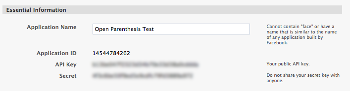
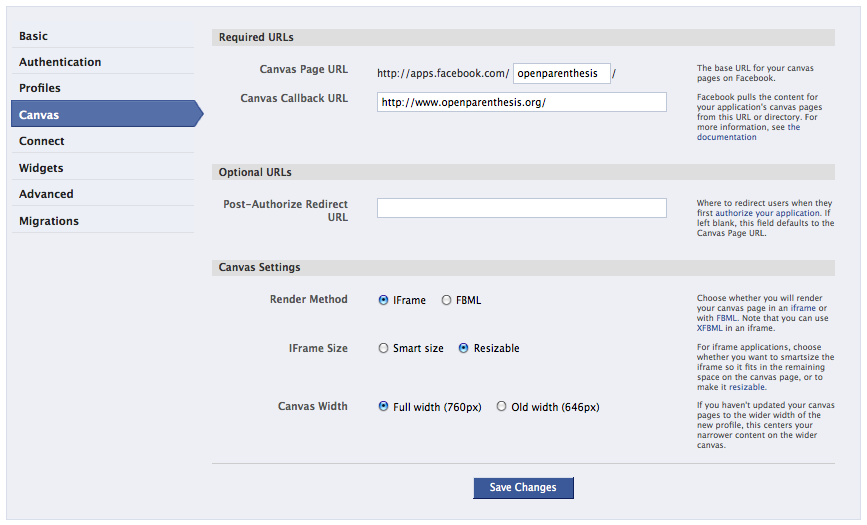
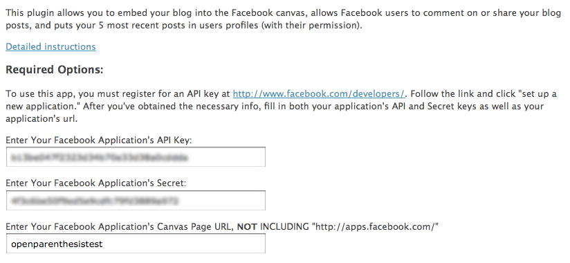
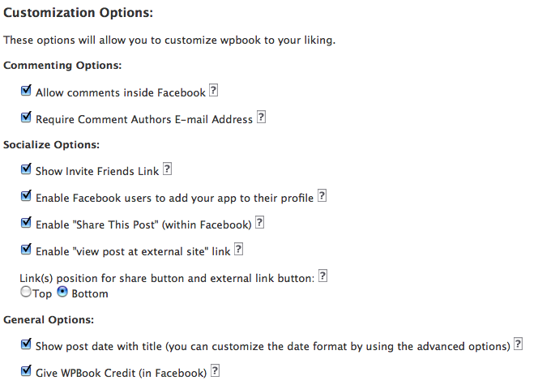
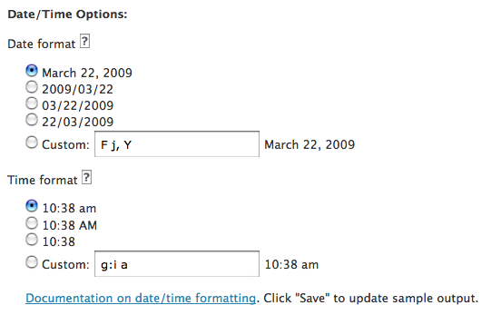
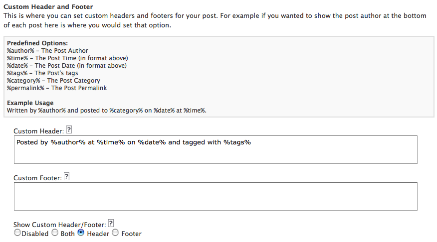
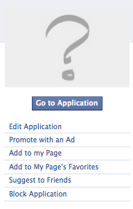
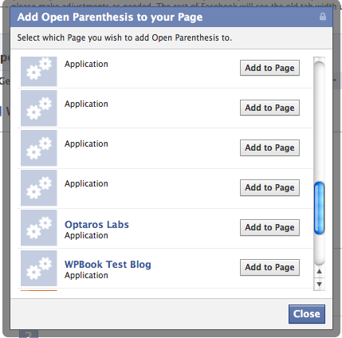
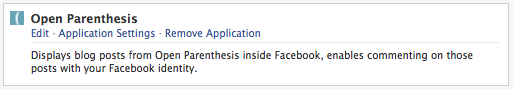

Installation Instructions
1. Upload Plugin to WordPress
Copy the entire wpbook directory into your wordpress plugins folder,
/wp-content/plugins/
You should have a directory structure like this (of course you'll likely have different plugins installed):

2. Create Facebook App
Set up a New Application at http://www.facebook.com/developers/, obtaining a secret and API key.

On the "Canvas" tab: Set the canvas callback url to your blog url, including a trailing slash. (Example: http://www.yourblogurl.com/)
For canvas url, you just need something all lower case, unique, with no spaces, and no trailing slash. Remember it.
Set the application to use an iFrame, not fbml, and to "resizable" NOT "smart size." (Using iFrames lets you use javascript, objects, and other tags not allowed in FBML inside blog posts, setting to resizable enables Facebook javascript to resize the iframe to the content).

3. Activate the Plugin
Login to Wordpress Admin and activate the plugin
4. Fill out Plugin Settings
Required Settings
Using the WPBook menu, (Dashboard->Settings->WPBook) fill in the appropriate information including Facebook application secret and API keys, as well as your application canvas url.

Customization Options
You can also optionally set customization options:

Commenting Options
Comments inside Facebook can be enabled or disabled without any impact on comments when your blog is viewed outside Facebook.
If you have comments enabled, you can optionally require users to provide their email address. (Facebook does not allow access to the user's email address, so you can really only ask users to provide one, not prefill it automatically).
The Enable Gravatar option will allow you to use Globally recognized avatars or Gravatars. You will be able to set a rating and a default gravatar. For more information on gravatars visit Gravatar.com
Socialize Options
Enabling the "Show Invite Friends Link" will show a link inside Facebook when viewing your application which allows users to send invites to their friends.
"Enable Facebook users to add your app to their profile" will show an "Add to Profile" button for users viewing the app inside Facebook - this lets them choose to add the application to their profile.
Here's what the user will see when they click that "add to profile" link:

And here's what the added profile section will look like:

Note that the "add to profile" link is not shown to users who have already added the app to their profiles
The "Share this post" links can also be enabled or disabled. If they are enabled, they will allow the user to "share" your blog posts using the built in Facebook Share mechanism, including sending a message to friends or posting in their profile.
The "Enable 'view post at external site' link" enables a link to each blog post at your full blog url (outside Facebook). This is useful to get folks going to your blog outside Facebook, to see it full size/theme etc.
The "Link position for share button and external link button" option determines where, within each post, those two links will appear - either at the top of the post (before the post content) or at the bottom of the post (after the post content).
General Options
The "show post date with title" option will show, as you might expect, the date posted preceding the title of each blog post.
If you have not set the date format in the advanced options you must do this before activating this option. Once the date has been set the "show advanced options" can be disabled.
The "Give WPBook credit" option adds a line at the bottom of your Facebook application pages which says "This Facebook application powered by the WPBook plugin for Wordpress" - I'd love it if you would leave this enabled but it is not required.
The "show pages" option adds the ability to pull your Wordpress pages into Facebook. This feature is still in experimental mode and won't work with all plugins but works well for static content pages.
Show Advanced Options
Clicking "show advanced options" reveals further configuration options:

Date/Time Options
These options let you set the format for dates and times as they will be displayed by the "Show post date with title" option and with the custom header/footer option (see below).
Custom Header and Footer
These options give you significant flexibility to include a header/footer above or below each post, including the author, post time, post date, tags, categories, and permanlink.
5. Add Application to Pages
Follow these directions to add your application to Facebook pages, not user profiles. This is a bit complicated, but isn't the kind of thing you should have to do often.
You'll need to enable "Pages" and "User Profiles" in the "Authorization" tab of the Facebook settings.

To add to a Facebook page:
A. Go to your Facebook application's "About" page. (Easiest way is to go to the application itself, and click on the application name at the bottom where it says "Page built by").

B. Click on "Add to Page" in the right column. (If that doesn't appear, you haven't enabled "Pages" in the Facebook Settings for your application - authorization tab - or you don't own any pages.)

Facebook will ask you to confirm that you are adding the app to a page

C. Go back to the page to which you added the app, and click on "edit page."
D. While looking at the page in edit view, find your application in the list of applications on that page. Click on the little pencil in the upper right hand corner of the box for your application, and choose edit

E. You should be taken to a page which thanks you for adding the app.